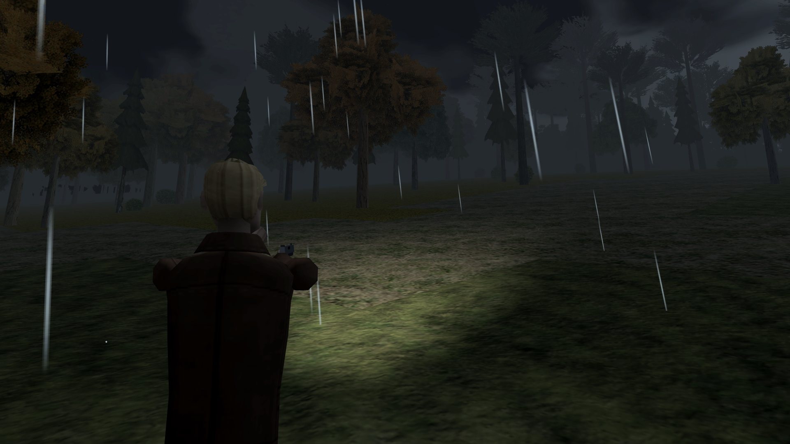
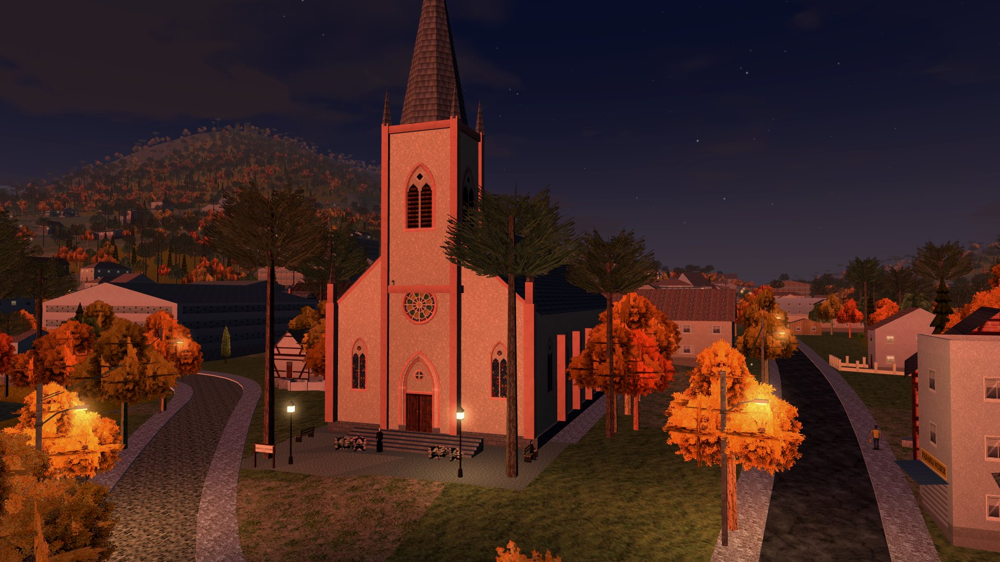

Das Spiel
Wie man überlebt
Dritte Person, Kamera über der Schulter und knappe Munition. Teewald ist ein Survival-Horror alter Schule, der direkt im Browser läuft.
Kampf
Mit allem, was zur Hand ist
- Faustschläge als Dreierkombo, immer verfügbar. Der Schlag zielt von selbst auf den, der am nächsten steht.
- Knüppel, Eisenrohr, Schaufel, Sense und Axt. Sie schlagen härter zu, aber nutzen sich ab und zerbrechen.
- Steine und Ziegel zum Werfen. Mit der Waffe in der Hand: Kolbenschlag.
- Schnelles Ausweichen, mit einem Augenblick Luft, um dem Zuschnappen zu entgehen.
- Zum Anfang eine 9-mm-Pistole. Den Rest erkämpfst du dir unterwegs.
- Jede Legende hat ihre Schwachstelle. Kugeln helfen nicht immer.
Jedes Kapitel endet mit einer Wertung von S bis C, nach besiegten Kreaturen, Toden und Zeit. Drei Schwierigkeitsgrade: leicht, normal und schwer.
Inventar und Akten
Alles, was in die Tasche passt
Sechzehn Plätze im Stil der Survival-Horror-Spiele der PS1, der Gegenstand dreht sich in 3D. Ausrüsten, nachladen, essen, untersuchen. Leben gibt es mit Kuchen und Marcela-Tee zurück, und besiegte Kreaturen lassen manchmal Munition fallen.
In der Stadt gibt es Zeitungsausschnitte, Briefe, Aushänge und Tagebuchseiten, und jedes Stück landet in den AKTEN. Die Legenden, die du aus der Nähe siehst, bekommen einen Eintrag. Und es gibt Leute, die um Hilfe bitten: Eine Katze und ein Hund sind verschwunden.
Grafikstil
Zwei Arten zu sehen
Zieh den Trennstrich. Links KLARES 3D, rechts PS1 RETRO. Beides findest du in den OPTIONEN, zusammen mit der Beleuchtung.

KLARES 3D PS1 RETROKlares 3D
Native Bildschirmauflösung, Kantenglättung und weiche Texturen. Die Low-Poly-Polygone wirken scharf.
PS1 Retro
320×240, ohne Glättung hochskaliert, mit Dithering und 15-Bit-Farbe. So, wie es der Röhrenfernseher zeigte.
Beleuchtung
ERWEITERT, mit tiefer Abendsonne, Schatten von Sonne und Mond und einem Lichtkranz um die Laternen. Oder KLASSISCH, bedeckt und ohne Schatten.
Wetter und Ton
Das Wetter schlägt um
Bedeckter Nachmittag, Abenddämmerung, tiefe Nacht, Nebel im Morgengrauen, Regen, Nieselregen und Gewitter, und der Donner kommt erst nach dem Blitz. Nachts leuchtet die Taschenlampe voraus, die Laternen auf dem Platz gehen an, und der Rest bleibt im Dunkeln.
Jeder Ton im Spiel entsteht im Code: Wind, Fluss, Regen auf dem Dach, Grillen, Krähen, Kiebitze, knarrendes Holz im Haus und die Kirchenglocke, lauter nahe am Turm und gedämpft hinter Mauern. Mit Kopfhörern hörst du, von welcher Seite das Geräusch kommt.
Steuerung
Tastatur, Controller oder Touch
| Gehen | WASD oder Pfeiltasten |
| Rennen | Shift |
| Springen · Ausweichen | Leertaste · C oder Ctrl |
| Kamera | Maus (ins Bild klicken, um den Zeiger zu fangen) · QE · Mausrad zoomt |
| Reden, Lesen, Nehmen, Betreten | F oder E |
| Zielen · Schießen | rechte Taste (halten) · linke Taste |
| Schlag | V · linke Taste ohne Schusswaffe |
| Waffe wechseln · Nachladen | 1 bis 8 · R |
| Essen, Trinken (heilt) | H |
| Inventar · Akten | I oder Tab · J |
| Minikarte · Pause | M · Esc oder P |
| Gehen · Kamera | linker Stick · rechter Stick (R3 zentriert) |
| Rennen | B (halten) oder L3 |
| Springen · Ausweichen | A · B (kurz tippen) |
| Reden, Lesen, Nehmen, Betreten | A |
| Zielen · Schießen | L2 oder LB · R2 |
| Schlag | RB |
| Waffe wechseln · Nachladen | Steuerkreuz ◀ ▶ · X |
| Essen, Trinken (heilt) | Steuerkreuz ▲ |
| Inventar | Y |
| Pause und Akten · Minikarte | Start · Select |
| Gehen | auf der linken Bildschirmseite ziehen |
| Kamera | auf der rechten Seite ziehen (oder direkt auf FEUER) · Doppeltippen zentriert · zwei Finger zoomen |
| Rennen · Springen · Ausweichen | Tasten RENNEN, SPRING und AUSW. |
| Reden, Lesen, Nehmen, Betreten | die Taste erscheint über der Person oder dem Gegenstand |
| Zielen · Schießen · Schlag | ZIELEN schaltet an und aus · FEUER · SCHLAG |
| Waffe · Nachladen · Heilen | WAFFE · NACHL · HEILEN (erscheint, wenn du verletzt bist) |
| Inventar · Pause | INV · ❚❚ |
Mit Controller und Touch gibt es Zielhilfe (aus, normal oder stark) und Vibration bei Schüssen und Schlägen. Auf dem Handy verschwinden die Bildschirmtasten, sobald ein Bluetooth-Controller benutzt wird.
Wo du spielst
Ohne Installation
- PC
- Handy
- Tablet
- Controller
- Touch
Ein aktueller Browser mit WebGL genügt: Chrome, Edge, Firefox oder Safari. Auf dem Handy spielt es sich am besten quer, und unter Android wechselt das Spiel in den Vollbildmodus, wenn du auf den Startbildschirm tippst.
Der Fortschritt wird von selbst im Browser gespeichert: bei jedem neuen Abschnitt, an den Rückkehrpunkten und alle zwanzig Sekunden. FORTSETZEN bringt dich genau dorthin zurück, wo du aufgehört hast.
- Português
- English
- Español
- Deutsch
Fragen
Was kostet es?
Nichts. Einfach öffnen und spielen.
Wo wird mein Fortschritt gespeichert?
Im Browser des Geräts, auf dem du gespielt hast. Wenn du die Website-Daten löschst, ist der Fortschritt weg, und auf einem anderen Gerät fängst du von vorn an.
Kann ich mit Controller spielen?
Ja, auf PC und Handy, mit USB- oder Bluetooth-Controller. Auch die Menüs lassen sich mit dem Controller bedienen.
Ist es sehr gruselig?
Es ist ein Horrorspiel: Dunkelheit, Blut, Kreaturen und Schreckmomente, im Geist der Survival-Horror-Spiele der 90er. Spiel nachts, mit Kopfhörern, wenn du dich traust.
Gibt es die Stadt wirklich?
Die Karte ist Santa Maria do Herval (RS) nachempfunden, mit echten Straßen und echtem Gelände. Die Einwohner und die Geschichten sind erfunden.
Wie viele Kapitel gibt es?
Zwölf. Was in jedem passiert, erzählt das Spiel.
Bereit für die erste Nacht?
Pistole im Holster, ein Magazin mit zwölf Schuss und eine Schachtel Patronen. Den Rest findest du unterwegs.
▶ Jetzt spielen Kostenlos · im Browser